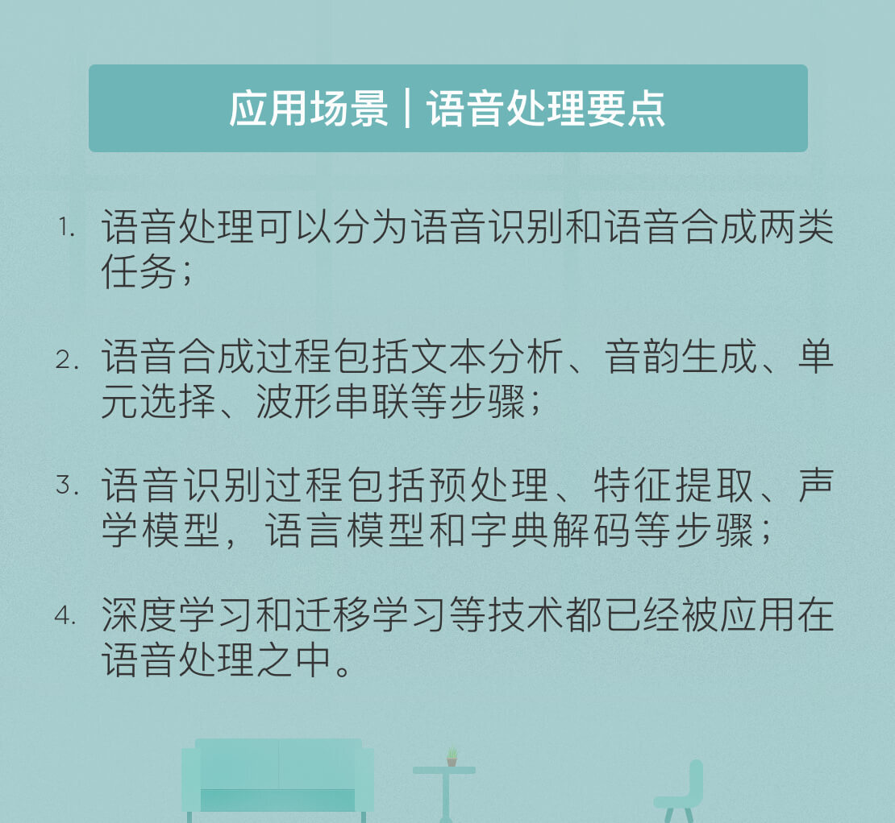

- 00 开篇词 人工智能：新时代的必修课.md.html
- 01 数学基础 九层之台，起于累土：线性代数.md.html
- 02 数学基础 月有阴晴圆缺，此事古难全：概率论.md.html
- 03 数学基础 窥一斑而知全豹：数理统计.md.html
- 04 数学基础 不畏浮云遮望眼：最优化方法.md.html
- 05 数学基础 万物皆数，信息亦然：信息论.md.html
- 06 数学基础 明日黄花迹难寻：形式逻辑.md.html
- 07 机器学习 数山有路，学海无涯：机器学习概论.md.html
- 08 机器学习 简约而不简单：线性回归.md.html
- 09 机器学习 大道至简：朴素贝叶斯方法.md.html
- 10 机器学习 衍化至繁：逻辑回归.md.html
- 11 机器学习 步步为营，有章可循：决策树.md.html
- 12 机器学习 穷则变，变则通：支持向量机.md.html
- 13 机器学习 三个臭皮匠，赛过诸葛亮：集成学习.md.html
- 14 机器学习 物以类聚，人以群分：聚类分析.md.html
- 15 机器学习 好钢用在刀刃上：降维学习.md.html
- 16 人工神经网络 道法自然，久藏玄冥：神经网络的生理学背景.md.html
- 17 人工神经网络 一个青年才俊的意外死亡：神经元与感知器.md.html
- 18 人工神经网络 左手信号，右手误差：多层感知器.md.html
- 19 人工神经网络 各人自扫门前雪：径向基函数神经网络.md.html
- 20 人工神经网络 看不见的手：自组织特征映射.md.html
- 21 人工神经网络 水无至清，人莫至察：模糊神经网络.md.html
- 22 深度学习 空山鸣响，静水流深：深度学习概述.md.html
- 23 深度学习 前方有路，未来可期：深度前馈网络.md.html
- 24 深度学习 小树不修不直溜：深度学习中的正则化.md.html
- 25 深度学习 玉不琢不成器：深度学习中的优化.md.html
- 26 深度学习 空竹里的秘密：自编码器.md.html
- 27 深度学习 困知勉行者勇：深度强化学习.md.html
- 28 深度学习框架下的神经网络 枯木逢春：深度信念网络.md.html
- 29 深度学习框架下的神经网络 见微知著：卷积神经网络.md.html
- 30 深度学习框架下的神经网络 昨日重现：循环神经网络.md.html
- 31 深度学习框架下的神经网络 左右互搏：生成式对抗网络.md.html
- 32 深度学习框架下的神经网络 三重门：长短期记忆网络.md.html
- 33 深度学习之外的人工智能 一图胜千言：概率图模型.md.html
- 34 深度学习之外的人工智能 乌合之众的逆袭：集群智能.md.html
- 35 深度学习之外的人工智能 授人以鱼不如授人以渔：迁移学习.md.html
- 36 深度学习之外的人工智能 滴水藏海：知识图谱.md.html
- 37 应用场景 你是我的眼：计算机视觉.md.html
- 38 应用场景 嘿, Siri：语音处理.md.html
- 39 应用场景 心有灵犀一点通：对话系统.md.html
- 40 应用场景 数字巴别塔：机器翻译.md.html
- 一键到达 人工神经网络复习课.md.html
- 一键到达 应用场景复习课.md.html
- 一键到达 数学基础复习课.md.html
- 一键到达 机器学习复习课.md.html
- 一键到达 深度学习之外的人工智能复习课.md.html
- 一键到达 深度学习复习课.md.html
- 一键到达 深度学习框架下的神经网络复习课.md.html
- 推荐阅读 我与人工智能的故事.md.html
- 新书 《裂变：秒懂人工智能的基础课》.md.html
- 直播回顾 机器学习必备的数学基础.md.html
- 第2季回归 这次我们来聊聊机器学习.md.html
- 结课 溯洄从之，道阻且长.md.html
- 课外谈 “人工智能基础课”之二三闲话.md.html
- （课外辅导）人工神经网络 拓展阅读参考书.md.html
- （课外辅导）数学基础 拓展阅读参考书.md.html
- （课外辅导）机器学习 拓展阅读参考书.md.html
- （课外辅导）深度学习 拓展阅读参考书.md.html
- 捐赠
38 应用场景 嘿, Siri：语音处理
Siri是由苹果公司开发的智能语音助手。2011年10月，Siri以系统内置应用的方式随iPhone 4s一起发布，并被逐步集成到苹果的全线产品之中。Siri支持自然语言的输入与输出，可以通过与用户的语言交互实现朗读短信、介绍餐厅、询问天气、设置闹钟等简单功能，它还能不断学习新的声音和语调，并提供对话式的应答。今天，我就结合苹果公司关于Siri的介绍简单谈谈人工智能中的语音处理。
Siri的语音处理包括语音识别和语音合成两部分。语音识别（speech recognition）的作用是听懂用户的话，语音合成（speech synthesis）的作用则是生成Siri自己的回答。目前在苹果公司公开的技术博客Apple Machine Learning Journal上，主要给出的是语音合成的技术方案，但这些方案对语音识别也有启发。
在很多游戏和软件中，语音提示都是由声优提前录制而成，但以Siri为代表的实时语音助手们必须采用语音合成技术。业界主流的语音合成方法有两种：单元选择和参数合成。
当具备足够数量的高品质录音时，单元选择方法能够合成出自然的高质量语音。相比之下，参数合成方法得到的结果虽然更加流利且容易识别，其整体质量却有所不及，因而适用于语料库较小的情景。
将两者结合起来就得到了混合单元选择模式：其基本思路仍然是单元选择的思路，在预测需要选择的单元时则采用参数方法，Siri正是采用了这种模式。
要实现高质量的语音合成，足够的录音语料是必备的基础。但这些语料不可能覆盖所有的表达，因而需要将其划分为音素和半音素等更微小的基本单元，再根据由输入语音转换成的文本将基本单元重组，合成全新的语音。
当然，这样的重组绝非易事：在自然语言中，每个音素的选择既依赖于相邻音素，也取决于整体语句的音韵。单元选择方法完成的正是基本单元重组的任务：既要与输入的文本对应，又要生成符合语句内容的音调与音韵，同时还不能出现明显的打喯儿与中断。
Siri的语音合成系统包括文本分析、音韵生成、单元选择、波形串联四个模块，前两个环节对应前端的文本处理，后两个环节则对应后端的信号处理。
文本分析模块既要对输入文本进行标音，也要提取其音韵特征，包括将非规范的数字和缩略语进行转换，从而生成单词标音，解析语法、重音和分句等信息。这些信息将被提供给音韵生成模块，用于确定输出语音的音调和音长等声学特征。基于这些特征，单元选择模块执行搜索，选择出最优的单元序列。这些序列最后由波形串联模块拼接为连续无间断的语音，作为输出呈现给手机用户。
在音韵生成过程中，机器学习通常被用于确定文本与语音之间的关系，并根据文本背后的语义特征来预测输出语音的特征。比如说如果文本是个疑问句，那么输出的语音就应该以升调结尾，文本中的感情色彩也会影响语音特征的选择。
理想的音韵模型可以由机器学习训练得到：输入是数字化的语言特征，其中包括音素的一致性、音素的前后关系、音节/单词/短语级别的位置特点等内容；输出则是经过数字化的声音特征，包括频谱特性、基波频率、音素持续时间等内容。经过训练，机器学习的算法就能完成从语言特征到声音特征的映射，生成的声音特征被用于指导单元选择过程，至关重要的指导因素就是合适的音调和音长。
在后端，录制的语音流数据首先要根据语音识别声学模型进行分段，在这个过程中，输入的语音序列需要与从语音信号中提取出的声学特征进行对准。分割后的语音段则被用来生成语音单元数据库，这个数据库还可以根据每个单元的语境和声学特征进行增强。将从前端获得的声音特征代入到语音单元数据库中，就可以使用维特比算法（Viterbi algorithm）搜索用于语音合成的最佳路径。
对于每个目标半音素，维特比算法都可以搜索出一个最优单元序列来合成它，评价最优性的指标包括两条：目标成本和拼接成本。
目标成本用于评价目标声音特征和每个单元的声音特征的区别；拼接成本则用于评价相邻单元之间的声学差异。维特比搜索的目的就是找到一条使目标成本和拼接成本的加权和最小的单元路径。当最优的单元序列确定后，每个单元的波形便由波形串联模块拼接在一起，形成输出语音。
Siri的独特之处在于将深度学习应用在了混合单元选择模式中：用基于深度学习的一体化模型代替传统的隐马尔可夫模型指导最优单元序列的搜索，以自动并准确地预测数据库中单元的目标损失和拼接损失。
Siri使用的技术是深度混合密度网络（Mixture Density Network），这是传统的深度神经网络和高斯混合模型（Gaussian Mixture Model）的组合。
深度神经网络用于对输入特征和输出特征之间复杂而非线性的数量关系进行建模，通常使用反向传播方式来调整网络的权重参数，实现神经网络的训练；高斯混合模型用于在给定一组高斯分布的输入条件下，对输出的概率分布进行建模，通常使用期望最大化算法进行训练。
深度混合密度网络结合了两者的优点。
其输入是二进制序列，虽然是离散变量，它们却包含一些连续变化的特征，这些特征包括很多信息。其中既有当前音素与其前后各2个音素（共5个）之间的多元音素信息，也有从音节到单词到短语再到句子级别的信息，以及额外的重读和强调特征。
其输出则是包含基波频率、梅尔倒谱系数、单元持续时间等一系列声音特征。除此之外，输出还包括每个特征的方差值，这些方差表示了上下文的相关权重。
将语音合成的过程倒转过来，就是语音识别的近似过程。语音识别能够将语音信号转换成对应的文本信息，其系统通常包含预处理、特征提取、声学模型，语言模型和字典解码等几个模块。
预处理模块通常用来滤除语音中的低频噪声，并对语音加以分段。特征提取模块将语音信号从时域变换到频域，在频域上提取语音的特征参数。接下来，声学模型将语音特征映射为不同的音素，语言模型将音素映射为可能的词组，字典解码则根据语言习惯，选择最可能的词组序列作为输出。
在传统的语音识别中，特征选择过程通常使用梅尔倒谱系数（Mel Frequency Cepstral Coefficient）作为特征。梅尔倒谱系数能够对信号进行降维，将声音的基波信息提取到倒谱域的高频部分，声道信息提取到倒谱域的低频部分。
声学模型采用的是高斯混合模型和隐马尔可夫模型（Hidden Markov Model）的组合，隐马尔可夫模型可以通过隐藏节点的引入解决特征序列到多个语音基本单元之间的对应关系，也使用期望最大化算法加以训练。语言模型可以根据语言的统计特性建立，统计语言模型假定当前词的概率只与之前若干个词相关，因而可以用于估计特定词语出现在给定上下文中的概率。
随着神经网络和深度学习的发展，相关的技术也被应用在声学建模之中。包括卷积神经网络、循环神经网络和长短期记忆网络在内的主流神经网络模型都已经得到使用，并取得了不错的效果。与隐马尔可夫模型相比，神经网络的优点在于不依赖对特征统计特性的任何假设，但其缺点则是对时间上的依赖关系的建模能力较差，因而缺乏处理连续识别任务的能力。
值得一提的是，Siri在声学模型的训练中用到了迁移学习技术，通过跨带宽和跨语言的初始化来提升神经网络的声学模型。
目前，Siri的应用范围覆盖了所有的主流语言，而苹果的研究表明：不同语言、不同带宽语音数据的神经网络训练可以在同样的框架下进行，其基础是神经网络中特征变换的泛化特性，这使得特征变换的方法不依赖于具体的语言。
因此，经过宽带语音信号预训练的神经网络可以直接用于蓝牙语音信号的训练；经过英语预训练的神经网络也可以直接用于汉语的训练。这种迁移学习技术大大提升了Siri在小数据集下的表现。
今天我结合苹果公司公开的一些资料，以Siri为例和你分享了语音处理的一些技术进展。其要点如下：
- 语音处理可以分为语音识别和语音合成两类任务；
- 语音合成过程包括文本分析、音韵生成、单元选择、波形串联等步骤；
- 语音识别过程包括预处理、特征提取、声学模型，语言模型和字典解码等步骤；
- 深度学习和迁移学习等技术都已经被应用在语音处理之中。
语音处理的最终目的不是简单地分析或者合成声音，而是为了更好地和人交互，从而以更简捷的方式解决问题。从交互的角度来看，你认为目前的语音助手还存在着哪些不足呢？
欢迎发表你的观点。

© 2019 - 2023 Liangliang Lee. Powered by gin and hexo-theme-book.